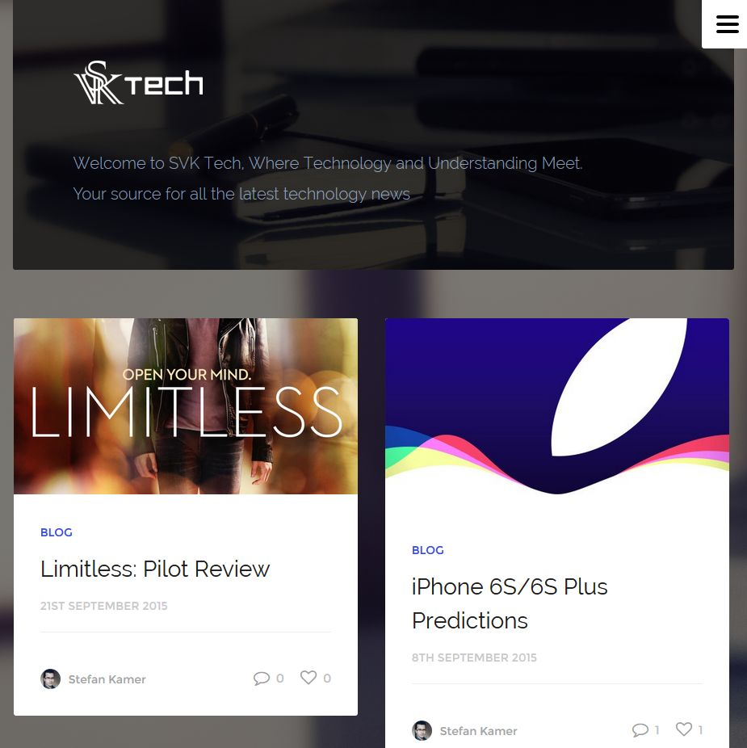

Front-end Web Developer, with a passion for good design
Stefan V. Kamer
A brief background
My interest in web development stemmed from my passion for beautiful design, the latest technologies, and the power of creation that web development grants. The possibilities are endless. When I'm not coding away trying new things and learning more about something, I'm probably either tinkering on my phone, playing some video games, writing on my blog, or trying to figure out my next step in my path to success and how to execute it. Always doing something, whether people see it or not.
My latest projects

 SVK Tech
My own personal tech blog
My own personal tech blog
A look into my life